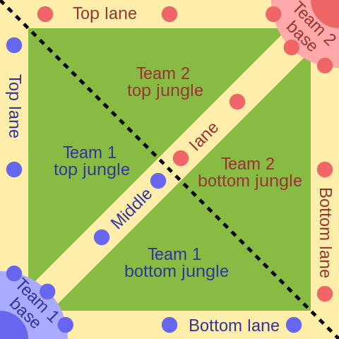

Что такое Лига Легенд?
League of Legends (в переводе с англ. — «Лига легенд»), сокращённо LoL — многопользовательская компьютерная игра 5 на 5 в жанре MOBA, разработанная и выпущенная американской компанией Riot Games в 2009 году.
League of Legends является одной из самых популярных игр в мире — в 2019 году количество одновременно присутствующих в ней игроков достигало 8 миллионов. Это также одна из крупнейших киберспортивных дисциплин, включающая в себя профессиональные лиги и чемпионат мира. Вокруг игры была выстроена медиафраншиза, включающая в себя побочные игры, в том числе мобильные и настольные, комиксы, музыкальные клипы и анимационный сериал.
Цель игры
Цель игры — последовательное уничтожение всех вражеских строений, защищающих главное здание на базе команды — нексус. Команда, разрушившая нексус, побеждает, а другой засчитывается поражение. На подходах к нексусу расположены башни и ингибиторы. Являясь оборонительными сооружениями, башни ведут огонь по приближающимся вражеским целям, отдавая приоритет неигровым персонажам — миньонам, запрограммированным на движение по определённой линии в направлении вражеского нексуса и т. п., атакуя чемпионов в самую последнюю очередь. После уничтожения вражеского ингибитора волны союзных миньонов получают суперминьонов. Добивание миньонов, нейтральных монстров в лесу и уничтожение строений приносит чемпиону очки опыта, которые повышают уровень чемпиона, и золото, необходимое для покупки предметов, усиливающих его характеристики.
Персонаж
Каждый игрок имеет возможность контролировать только своего одного чемпиона (за некоторыми исключениями), но в зависимости от набора его умений может определённым образом взаимодействовать с персонажами других игроков (лечить, ускорять, улучшать характеристики, атаковать и т. п.). Одной из важных целей и составляющих игры являются убийства вражеских чемпионов, за первую кровь(первое убийство) чемпиона в игре даётся больше золота, чем за обычное убийство. Если чемпион погибает, через некоторое время он оживает на своей стартовой базе. В отличие от стратегий реального времени, игрок не может управлять миньонами, модификация строений не предусмотрена.
Упрашённая карта игры
Вселенная игры
Ссылка на карту вселенной игры
Основным местом событий игры является измерение под названием Рунтерра. В Рунтерре чемпионы — герои и злодеи, со своей биографией, часто связанной с политической борьбой различных стран на континенте Валоран. Есть персонажи из другого мира, именуемого Бездной.